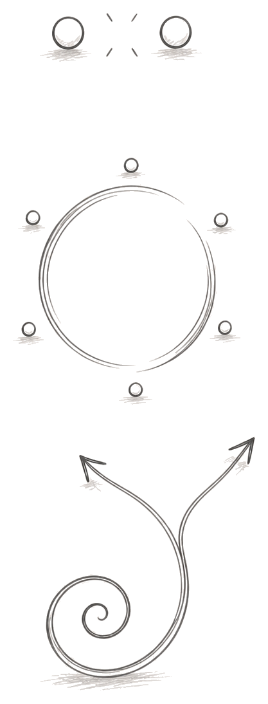
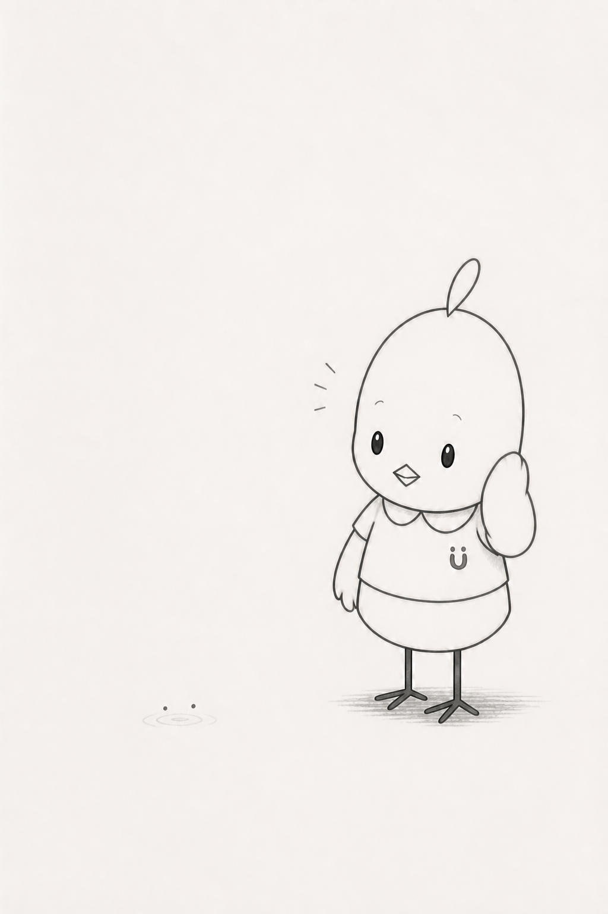
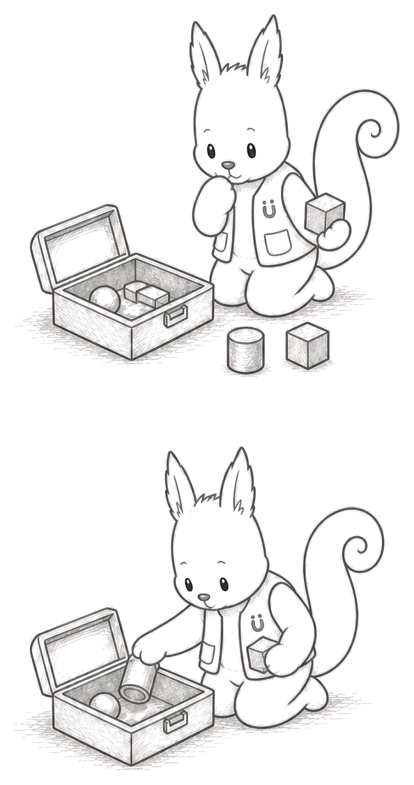
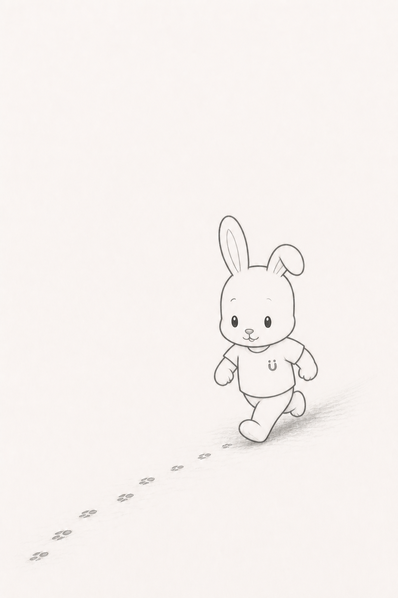
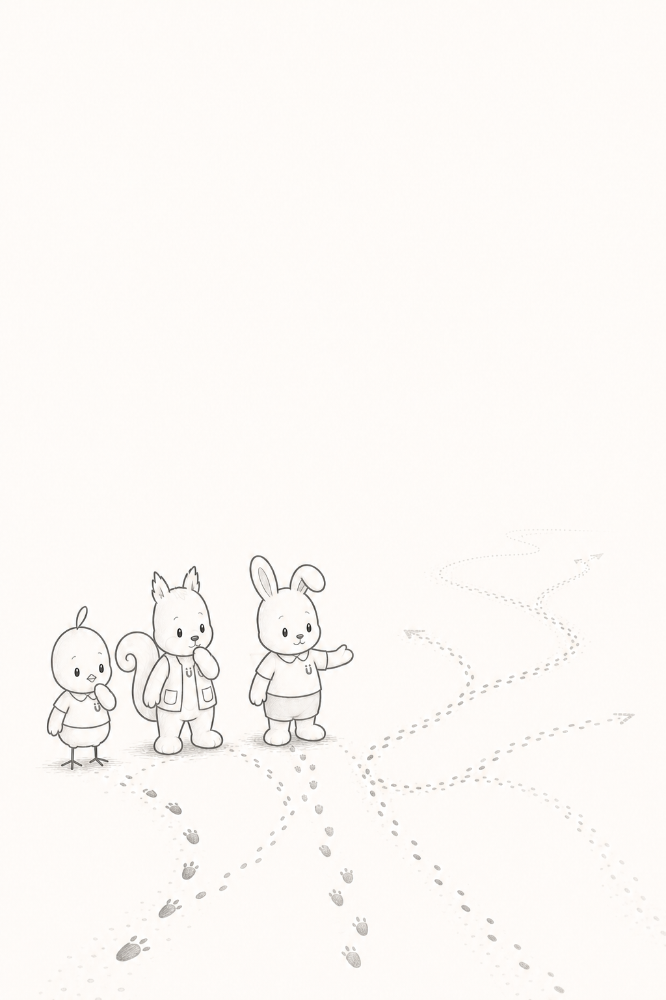

THREE WISHES
もっと、やりとりができたら。
園の活動に、その子なりの形で参加できたら。
好きな遊びが、もう少し広がったら。

MIMO
ミモは、
聴く。
小さな「伝えたい」を聴く先生
「新しいことを教える前に、もう始まっているやりとりを見てみよう。」

LUKE
ルークは、
探す。
手がかりから、合う方法を探す先生
「いま好きなことの隣に、次の遊びがあるかもしれないね。」

GEN
ゲンは、
合わせる。
その人に合う参加へ合わせる先生
「全部じゃなくても、その人に合う参加の形はつくれるよ。」

LISTEN · EXPLORE · ADAPT
聴く。探す。
合わせる。
見つけ方の違う3人の先生と、今あるサインから次の「できる形」を一緒に探す。
HugMap Stories｜小さなサインから、世界をひらく。
8/12 feedback の白黒 SMALL MASCOTを参照したシリーズ予告試作。画像は正式素材ではありません。